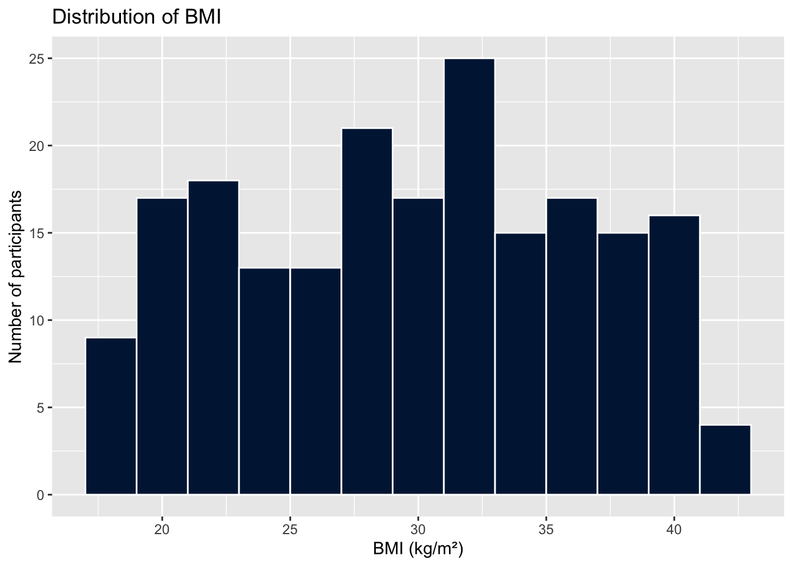
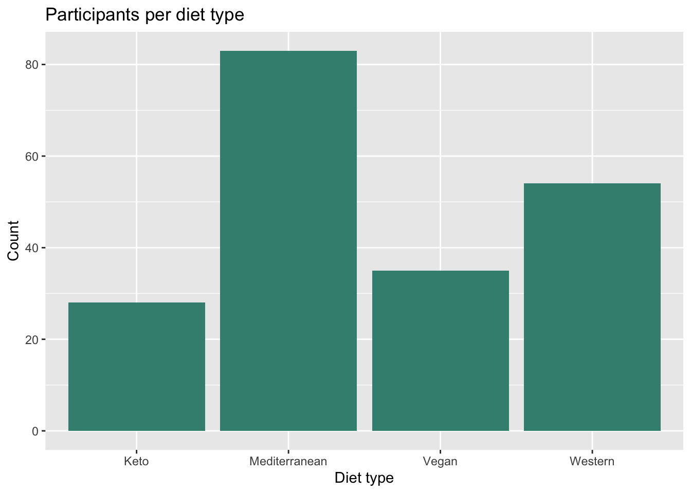
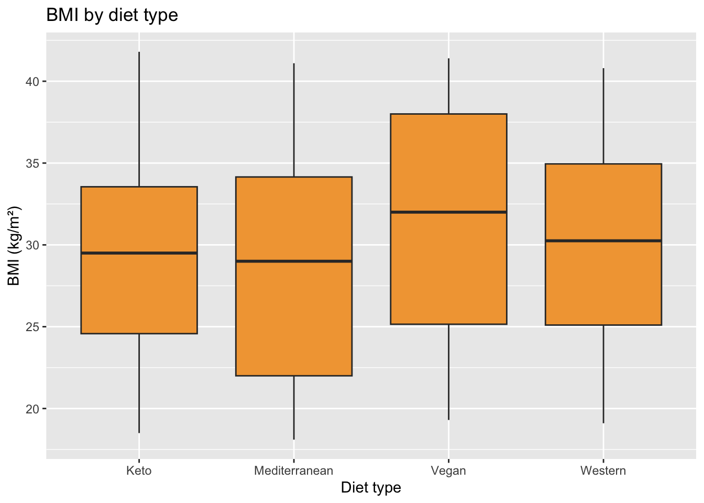
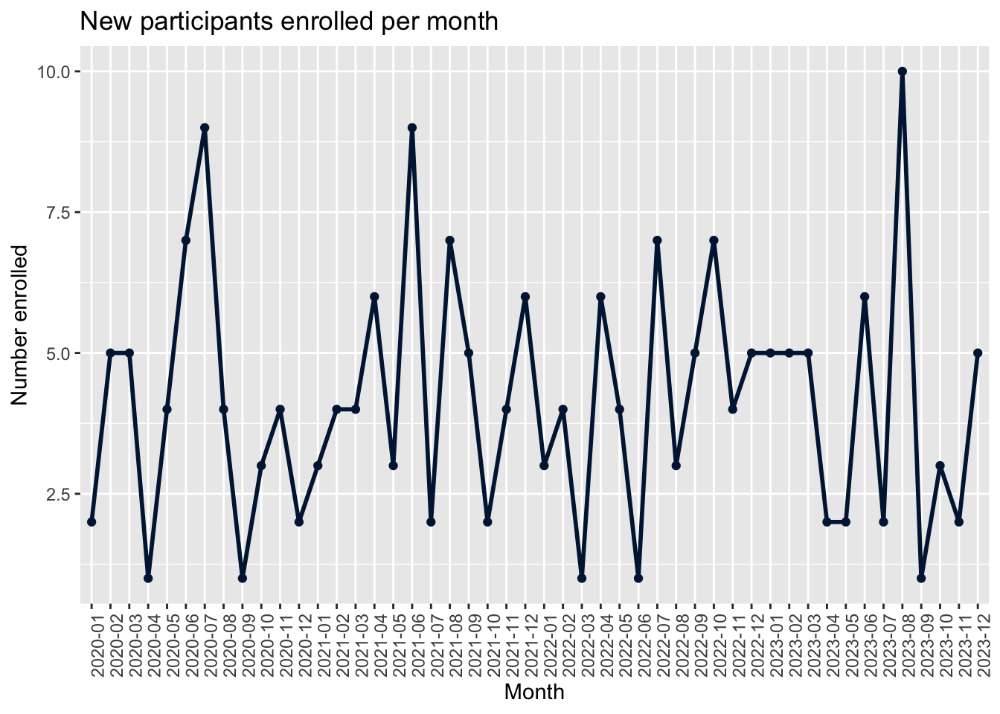
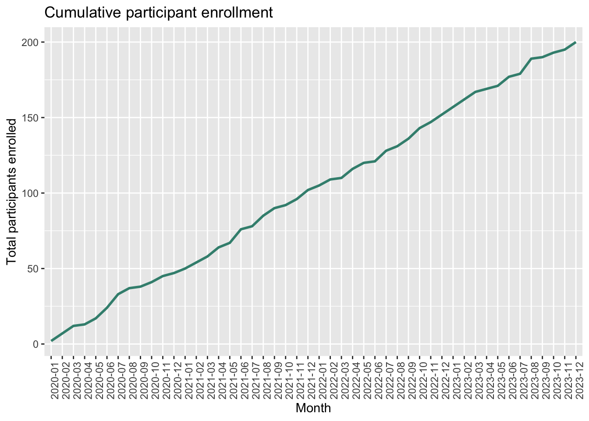
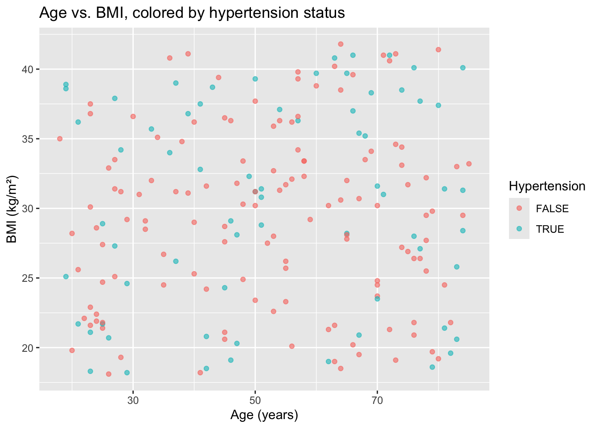

library(tibble)
library(dplyr)
library(ggplot2)
set.seed(123)
nutriheart_data <- tibble(
patient_id = 1:200,
enrollment_date = sample(
seq(as.Date("2020-01-01"), as.Date("2023-12-31"), by = "day"),
size = 200, replace = TRUE
),
gender = sample(c("Male", "Female"), size = 200, replace = TRUE),
age = sample(18:85, size = 200, replace = TRUE),
bmi = round(runif(200, min = 18.0, max = 42.0), 1),
diet_type = factor(
sample(c("Mediterranean", "Western", "Vegan", "Keto"),
size = 200, replace = TRUE, prob = c(0.40, 0.30, 0.15, 0.15))
),
physical_activity_level = factor(
sample(c("Low", "Moderate", "High"), size = 200, replace = TRUE,
prob = c(0.30, 0.45, 0.25)),
levels = c("Low", "Moderate", "High"), ordered = TRUE
),
daily_calories = round(rnorm(200, mean = 2200, sd = 450)),
sugar_intake_g = round(rnorm(200, mean = 55, sd = 20), 1),
hypertension = sample(c(TRUE, FALSE), size = 200, replace = TRUE, prob = c(0.35, 0.65)),
smoker = sample(c(TRUE, FALSE), size = 200, replace = TRUE, prob = c(0.20, 0.80)),
clinical_notes = sample(
c("Patient reports fatigue.", "Adheres strictly to diet.",
"Sedentary lifestyle.", "No recent complaints."),
size = 200, replace = TRUE
)
)7 Your First Plot
Once your numbers are in a vector, one line of code turns them into a picture. The built-in hist() function is the fastest way to see the shape of your data — how the values are distributed.
hist(ages,
main = "Distribution of ages",
xlab = "Age",
col = "#001D41")The chart below illustrates the idea: it redraws a histogram-shaped distribution with a different number of bins, the same way hist() would if you changed the breaks argument.
Every plot you make in RStudio or Posit Cloud appears in the Plots pane, where an Export button lets you save it as a PNG or PDF directly into your output/ folder.
TipWhen you’re ready to go further
Once hist() and plot() feel comfortable, the ggplot2 package (part of tidyverse) is the natural next step — same idea, far more control over how your charts look.
7.1 Plotting the NutriHeart data with ggplot2
Let’s take that next step right away, using the same nutriheart_data dataframe we built in Chapter 6. ggplot2 builds a chart in layers, always starting from the same three ingredients:
- Data — which dataframe to draw from.
- Aesthetics (
aes()) — which columns map to which parts of the chart (x-axis, y-axis, color, …). - Geometry (
geom_*()) — what kind of shape represents the data: bars, points, boxes, lines.
You build a plot by adding these pieces together with +, the same way you chained dplyr steps together with |>.
install.packages("ggplot2")
library(ggplot2)
NoteWhy we rebuild the dataset here
Each .qmd file in this book renders in its own, independent R session — variables created in Chapter 6 do not automatically carry over into this chapter. In your own projects you would normally avoid copy-pasting code like this by keeping the dataset in one script and loading it (e.g. with readr::read_csv()) in every chapter that needs it. For now, we simply rebuild nutriheart_data with the exact same code as before, so this chapter can run entirely on its own.
This is the identical tibble() call from Chapter 6 — same set.seed(123), same arguments — so it reproduces the exact same 200 rows. From this point on in the chapter, nutriheart_data behaves exactly as it did before.
7.1.1 Histogram — one continuous variable
Just like hist(), but built layer by layer. Let’s look at the distribution of bmi.
ggplot(nutriheart_data, aes(x = bmi)) +
geom_histogram(binwidth = 2, fill = "#001D41", color = "white") +
labs(title = "Distribution of BMI", x = "BMI (kg/m²)", y = "Number of participants")
ggplot(nutriheart_data, aes(x = bmi))creates the empty “canvas”: it tells R which dataframe to use, and that whatever we draw next should read its x-position from thebmicolumn. Nothing is plotted yet — this line alone would produce a blank grid.+ geom_histogram(...)adds the actual bars.binwidth = 2sets each bar to cover a 2-unit-wide range of BMI (the equivalent ofhist()’sbreaks);fillcolors the inside of the bars,colorcolors their outline.labs(title = , x = , y = )sets readable labels instead of the raw column namebmi— always label your axes for a reader who has never seen your code.
7.1.2 Bar chart — one categorical variable
For a column like diet_type, there is no “distribution” to draw — instead, we count how many participants fall into each category.
ggplot(nutriheart_data, aes(x = diet_type)) +
geom_bar(fill = "#3E8E7E") +
labs(title = "Participants per diet type", x = "Diet type", y = "Count")
geom_bar() is different from geom_histogram() in one important way: it counts rows for you, one bar per unique category found in x. You never need to compute the counts yourself with table() first — ggplot2 does it internally.
7.1.3 Boxplot — one continuous variable across groups
Now we connect a continuous variable to a categorical one — exactly the comparison our research question asked for: does BMI differ by diet type?
ggplot(nutriheart_data, aes(x = diet_type, y = bmi)) +
geom_boxplot(fill = "#F2A541") +
labs(title = "BMI by diet type", x = "Diet type", y = "BMI (kg/m²)")
Here aes() maps two columns at once: diet_type to the x-axis (one box per category) and bmi to the y-axis (what each box summarizes). Each box shows the median (middle line), the interquartile range (the box itself — the middle 50% of values), and any unusually high or low values as individual dots.
7.1.4 Line chart — a trend over time
Histograms, bar charts, and boxplots all summarize the data we already have as columns. A line chart is different: it is almost always used to show a trend, and a trend needs an x-axis that is ordered — usually time. nutriheart_data doesn’t have an “enrollments per month” column yet, because nobody measured that directly; we have to derive it ourselves from enrollment_date.
enrollment_by_month <- nutriheart_data |>
mutate(enrollment_month = format(enrollment_date, "%Y-%m")) |>
group_by(enrollment_month) |>
summarise(n_enrolled = n()) |>
arrange(enrollment_month) |>
mutate(cumulative_enrolled = cumsum(n_enrolled))
head(enrollment_by_month)# A tibble: 6 × 3
enrollment_month n_enrolled cumulative_enrolled
<chr> <int> <int>
1 2020-01 2 2
2 2020-02 5 7
3 2020-03 5 12
4 2020-04 1 13
5 2020-05 4 17
6 2020-06 7 24This chunk creates two brand-new, derived variables that did not exist in the original dataset — a very common step before plotting a trend:
mutate(enrollment_month = format(enrollment_date, "%Y-%m"))buildsenrollment_monthout ofenrollment_date.format(x, "%Y-%m")rewrites aDateas text showing only its year and month (e.g.2021-07), which collapses every day in a month down to the same label — exactly what we need to count monthly enrollments.group_by(enrollment_month) |> summarise(n_enrolled = n())reuses the pattern from Chapter 6: split the data by month, then count how many rows (participants) fall in each one.arrange(enrollment_month)puts the months back in chronological order — sinceenrollment_monthis text, R would otherwise sort it alphabetically, which happens to work for"YYYY-MM"labels, but it’s good practice to be explicit.mutate(cumulative_enrolled = cumsum(n_enrolled))adds a second derived variable: the running total of participants recruited so far.cumsum()(“cumulative sum”) adds each value to the sum of all values before it — turning monthly counts into a classic recruitment curve.
Now we can plot both derived variables as lines:
ggplot(enrollment_by_month, aes(x = enrollment_month, y = n_enrolled, group = 1)) +
geom_line(color = "#001D41", linewidth = 1) +
geom_point(color = "#001D41") +
labs(title = "New participants enrolled per month",
x = "Month", y = "Number enrolled") +
theme(axis.text.x = element_text(angle = 90))
A couple of details are new here, and both matter every time you draw a line over time:
group = 1tellsggplot2“treat every row as part of the same single line.” Without it,ggplot2sees a text column on the x-axis and, not knowing how to connect separate categories together, refuses to draw a continuous line. This is a very common beginner error — if your line chart comes out empty, check for a missinggroup.geom_line()connects the points in the order of the x-axis; addinggeom_point()on top just marks each actual monthly value, which makes the chart easier to read.theme(axis.text.x = element_text(angle = 90))rotates the month labels 90 degrees so they don’t overlap each other — a small but frequent fix once your x-axis has many labels.
The same idea works for the cumulative version — only the y and the label change:
ggplot(enrollment_by_month, aes(x = enrollment_month, y = cumulative_enrolled, group = 1)) +
geom_line(color = "#3E8E7E", linewidth = 1) +
labs(title = "Cumulative participant enrollment",
x = "Month", y = "Total participants enrolled") +
theme(axis.text.x = element_text(angle = 90))
This second chart is a good example of why deriving variables is worth the extra step: cumsum() turned a simple monthly count into a recruitment curve, a chart type you will see constantly in the methods section of real cohort studies.
7.1.5 Scatter plot — two continuous variables, colored by a third
Finally, let’s look at the relationship between age and bmi, and use color to bring in a fourth piece of information: whether the participant has hypertension.
ggplot(nutriheart_data, aes(x = age, y = bmi, color = hypertension)) +
geom_point(alpha = 0.6) +
labs(title = "Age vs. BMI, colored by hypertension status",
x = "Age (years)", y = "BMI (kg/m²)", color = "Hypertension")
- Adding
color = hypertensioninsideaes()tellsggplot2to draw each point in a different color depending on that participant’sTRUE/FALSEvalue — it automatically builds a legend for us. geom_point()draws one dot per row of the dataframe.alpha = 0.6makes each point slightly transparent (60% opaque), which helps when points overlap — a simple but important trick once you have 200 dots on the same chart.
TipThe pattern to remember
Every ggplot2 chart you will ever build follows the same skeleton:
ggplot(your_data, aes(x = ..., y = ...)) +
geom_something() +
labs(title = "...", x = "...", y = "...")Only the dataframe, the columns inside aes(), and the geom_*() you choose ever really change.
7.2 Function finder
Not sure which function you need? Choose a task below.
Quick check: in ggplot2, which function actually draws the bars, points, or lines onto the canvas?
aes()
ggplot()
geom_*()
Quick check: your geom_line() chart shows nothing but an empty grid. The x-axis is text (like enrollment_month). What did you most likely forget?
labs()
group = 1 inside aes()
library(ggplot2)
Quick check: to compare BMI across the four diet types in one chart, the best choice is…
geom_histogram()
geom_boxplot()
geom_bar()